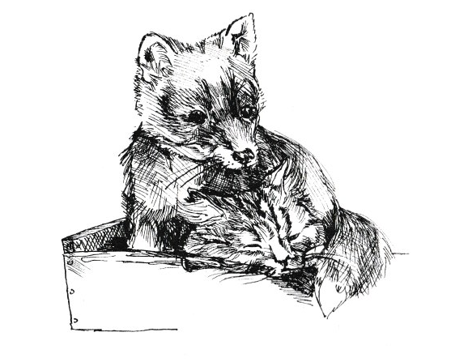

TEDDY
As I came home from school, Billy my pony cantering slowly along for it was a warm August afternoon, the lane’s mud was dry and dusty and the pony’s shoes only made a muffled thud, I heard the rhythmic swish of old Teddy cutting a binder (reaping machine) road alongside the hedge in the big oatfield. The gate into the field was thirty or forty yards along my homeward way. I tied Billy to the gate and walked along the newly cut corn way.
The oats had been cut and swept from the hedgerow to stand upright by the corn so that the binder would pick the oats up on the canvases as it cut a swathe and tie them into nice tight bundles that were sheaves, the ears one end (like flowers), the straws (stalks) the other. As I was a farmer’s son I was trained to stop when passing the farm workers and pass the time of day, to comment on the crops, the weather and last but most important, the job, to inquire or to praise.
The personal contact even of a ten to eleven year old, when a man was working eight to ten hours on his own, on a dusty day, a mile from anyone was a welcome break. Teddy was stripped to his shirt, his shirt sleeves rolled above his elbows; his skin was brown, almost black with the sun and wind, his corduroy trousers (yorked up) tied with a bag string just below the knee. He pushed small tools in to be handy to his work, i.e. a knife to split rick pegs, a bit of hardwood chip to clean his hoe, or a dry cloth to wipe or polish his tools. His leather belt kept his trousers up and his open necked shirt in; his strong hobnailed boots, oiled, were well worn but comfortable and on his head he wore a peaked cap with a sprig of elder poked in to keep the flies off.
Teddy paused as I neared him,
“Hello,” he said with a smile of welcome. “Warm, Master John”
“It is for your job Edward” said I, in my best grown up manner.
“The crop stands well – be easy for the machine.”
“It will,” said Teddy. “Fair crop of corn too, what I’ve cut through so far.”
“Yes” said I, “level as a table; father says that’s a sign of a good even yield – eight to nine quarters to the acre!”
“I reckon you could be right” said Teddy. “Not so good as Chisnell homeground two years ago, thirteen quarters to the acre; the machine couldn’t take it fast enough, the oats spilled out all over – they were everywhere!”
